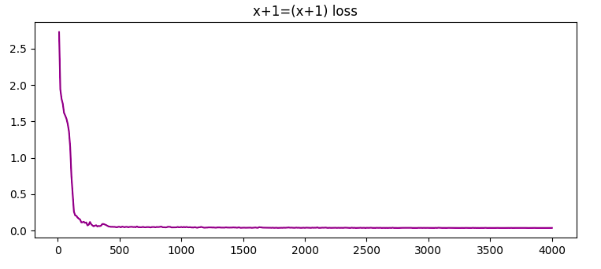

In my NanoPhi Project, I talked about how the model trained on textbooks had some basic math capabilities, the plus one pattern, or one digit addition working part of the time. While math wasn't the focus of that project, I saw several flaws in the model being able to learn math at all, from dataset to tokenizer. This time, I worked with minimal sized transformers from the ground up, to prove that they can learn math, and if you're model can't, its just a you skill issue.
To reiterate the title, most math, especially arithmetic, comes from a function, which is obviously a pattern. A transformer, like any neural net, gets inputs and outputs, while trying to reverse engineer the algorithim that made them. I also initally planned to do this with RNNs and use the turing machiene interprability message, but vanilla RNNs hate me, and spiked into a ~27 loss 10 steps into training, so back to transformers!
To start off with a proof of concept, I decided to train a 2 mil parameter +1 model, by quickly using a random number generator I made in C (started learning it recently, surprised at how much faster it was writing things to the disk in comparison to python, I finish generating all the datasets used in this in C before python made the first one, the python bloat is real) to make a text file with about 100k examples in the format x + 1 = (x+1).
A nice benefit of arithmetic is that you can do it all in like 17 chars, so with a default embeding size of 360, each embedding would have crazy expressivity, and I wouldnt be surprised by the embeddings storing random statistics about the tokens themselves at that point, but that would need interprebility research I can't really do.
The training run starts, loss drops to 0.0425 in 10 steps, before settling at ~0.03 after 100 steps. An intresting observation to make here is that all of these come from very simple math functions, and so it wouldnt be surprising for loss to drop right to zero, but NNs can probably only reach a certain minimum before being hurt by random samping and temp, along with randomness in other spots.
Practically perfect, greedy sampling here:
4719+1=4720
4720+1=4721
4721+1=4722
4722+1=4723
4723+1=4724
4448+1=4449
4449+1=4450
4450+1=4451
4451+1=4452
4452+1=4453
4453+1=4454
Heres the loss curve as an example: 
Before moving on to the other parts of arithmetic, its important to mention that I made this dataset in the literally easiest way possible, and it could be better in several ways, the fact that models learn off these datasets is a testament to the learning abilities of NNs
Each of the arithmetic operations(add/sub/mul/div) has 100 million examples, or 1.3B tokens
I expected a higher loss for addition, but after seeing the +1 proof drop that fast, I expected a 0.05 for good addition, yet got a loss of 1.3 in 2k iters, and eventually flatlined at 1.1 after 5k steps
After sampling it, I got this:
6719+6207=12926
9472+8559=18031
8079+3103=11182
9483+9138=18621
8133+6652=14785
5478+4446=9924
4076+3936=7012
1599+7550=9049
4721+7543=12264
8487+4040=12527
6258+8013=14271
4860+8373=13233
1286+8721=10007
298+9025=9323
Mostly correct, 3/4/5 digit math, imagine being claude sonnet and failing a couple
Moving on to subtraction, I expected a slighlty higher loss from the positive and negative numbers being possible, but after 5k steps it was a ~1.3, and most subtraction was 10-100, or a digit switch somewhere in the answer
In an experiemnt, busted up the embedding table dimensions to 1000, got a 120m model that fit in 1 GPU for training, also while 64k tok per step, and it managed to make 1.24 loss before flatlining.
The model showed some intresting behaviour, including digit approximation, where as the loss got lower, more digits tended to be correct per answer, from the thousands place onwards, with the last outs near the flatline started getting the 10s and 1s somewhat accurate.
Subtraction in general just appears to be alot slower in grokking than addition or plus one, though one would consider add/sub to be equally difficult.
Starting multiplication, I expected it to be as difficult as subtraction, but it was surprisingly easier, with a quick loss drop to ~1.6 at 2k steps, and flatlined at ~1.48 (5k steps)
Some quick examples:
680*258=173440, its just 1 digit off here, real answer is 175440
7412*2528=18716036, figuring out multiplication, getting initial/final digits right
12*1307=9162084, shows that data mixture is important. Its seen too many 4 digit * that it cant do a 2x4
Continued pretraining for 10k steps now, which is needed, even 200 more steps just dropped val loss. A loss of ~1 or ~1.2 would be amazing to see, as I believe that should cover the most digits being correct but a couple off issue. After 5.75k steps train/val at 1.4424/1.4427, jumped the learning rate, dropped to 1.43, and further lr jumps got final loss 1.27. Another continued pretrain before a full flatline at 1.23.
some samples:
9137*7041=64313517
9636*494=4768184
2498*8702=21767596
1066*1771=1888986
1436*7526=10773336
1647*7441=12243327
5292*9925=52564100
7315*2265=16606475
2900*9956=2980240
trying out fewshot with the multiplication model, it kinda worked, after 4 shots, it got 1 right and 1 wrong most of the time, so it can fewshot 50% acc.
most of them just have their middle digits off now, a bigger model, like 40m will probably solve this through scale
division, the hardest one of them all, was much slower to learn with a higher loss, also extra difficulty here, due to large floating point answers. It has the highest initial loss aswell (2.8 vs 2.5 for the others)
Its really slow to train, and the outputs are pure noise, it can't learn it at all
On a side note, in all the tasks, the difficulty comes in predicting the middle digits of the answer, which im not sure if its just the most difficult part, or has something todo with transformers lost in the middle issue.
Trying to look into interperability/why this happens, found the RASP paper, which is like the RNN to turing thing, but for transformers, Looked into it, but not really familiar with how all the underlying parts work, but it looks like you make lists of the tokens and performs ops into a matrix, and like a layer in a model does like 1-2 ops?
made some pseudocode examples of how these math operations look:
addition:
num1 = [1, 2, 3] # 123
num2 = [4, 5, 6] # 456
# Reverse the sequences (RASP operates from right to left)
rev1 = reverse(num1) # [3, 2, 1]
rev2 = reverse(num2) # [6, 5, 4]
pairs = zip(rev1, rev2) # [(3, 6), (2, 5), (1, 4)]
sum_digits = map(add, pairs) # [9, 7, 5]
# carry-overs
carry = 0
final_sum = []
for digit in sum_digits:
digit += carry
final_digit = digit % 10 # Get the ones digit
carry = digit // 10 # Get the tens digit
final_sum.append(final_digit)
# Reverse the final sum and return
result = reverse(final_sum) # [5, 7, 9]
Subtraction:
num1 = [1, 2, 3]
num2 = [4, 5, 6]
# Determine the sign of the result
if selector_width(select(indices, indices, num1 >= num2)) > 0:
# num1 >= num2, result is positive
sign = 1
larger = num1
smaller = num2
else:
# num1 < num2, result is negative
sign = -1
larger = num2
smaller = num1
rev_larger = reverse(larger)
rev_smaller = reverse(smaller)
# Subtract the pairs element-wise
diffs = map(sub, rev_larger, rev_smaller) # [7, 7, 3]
# Borrow
borrowed = 0
final_diff = []
for digit in diffs:
digit -= borrowed
if digit < 0:
digit += 10
borrowed = 1
else:
borrowed = 0
final_diff.append(digit)
# add neg token for negatives
if sign==-1:
final_diff.append(-)
# Reverse the final difference and return with the sign
result = reverse(final_diff) # [-,3, 7, 7]
Multiplication:
num1 = [1, 2, 3]
num2 = [4, 5, 6]
rev1 = reverse(num1)
rev2 = reverse(num2)
# Initialize
result = [0] * (len(rev1) + len(rev2))
# Multiply digits
for i, digit1 in enumerate(rev1):
carry = 0
for j, digit2 in enumerate(rev2):
product = digit1 * digit2 + result[i + j] + carry
result[i + j] = product % 10
carry = product // 10
result[i + len(rev2)] += carry
# Remove leading zeros
while len(result) > 1 and result[-1] == 0:
result.pop()
# Reverse the result and return
final_result = reverse(result)
Division:
num1 = [1, 2, 3, 4, 5]
num2 = [6, 7]
rev1 = reverse(num1)
rev2 = reverse(num2)
# Initialize
result = []
remainder = rev1
# Perform long division
while selector_width(select(indices, indices, remainder >= rev2)) > 0:
shift = selector_width(select(indices, indices, remainder >= rev2))
multiple = rev2 + [0] * shift
remainder = map(sub, remainder, multiple)
result.append(shift)
# Handle the remaining digits in the remainder
remainder = reverse(remainder)
while remainder and remainder[0] == 0:
remainder.pop(0) # Remove leading zeros
# Convert the result to floating-point if needed
if remainder:
result_float = reverse(result) + ['.'] + remainder
else:
result_float = reverse(result)
# Output: [1, 8, 4, '.', 2, 3, 5, 7]
Some observations here. Multiplication was addition with extra steps, a model with extra layers could probably reach addition accuracy with multiplication
Overall, there's a similarity between the rasp implementation difficulty and transformer learning difficulty, though the transformer absolutly failed to learn division, compared to its RASP v. layer count was intresting, perhaps long division/remainders wasnt explained well enough in the data, partially accounting for the difficulty.
the code diffculty was like add > sub > mul > div, while the transformer learning was like add > mul > sub > div, it looks like the IRL transformer has issues with reversed operations, like the borrower being a reverse carry, and the many if/else and ops in the division made it more difficult for a low layer transformer to figure it out
While real LLMs could probably easily learn/generalize complex math (if 20m gets this close, 120m will probably suceed, and 7b will see this as one little task), future things should try more complex algebra and calculus, which I believe will need more of this, with reasoning, COT, and an ability to understand a theorem and act upon it, so also more logical symbol usage.
If I do expand farther on this, its probably along:
CITATIONS:
@InProceedings{pmlr-v139-weiss21a,
title = {Thinking Like Transformers},
author = {Weiss, Gail and Goldberg, Yoav and Yahav, Eran},
booktitle = {Proceedings of the 38th International Conference on Machine Learning},
pages = {11080--11090},
year = {2021},
editor = {Meila, Marina and Zhang, Tong},
volume = {139},
series = {Proceedings of Machine Learning Research},
month = {18--24 Jul},
publisher = {PMLR},
pdf = {http://proceedings.mlr.press/v139/weiss21a/weiss21a.pdf},
url = {http://proceedings.mlr.press/v139/weiss21a.html}
}